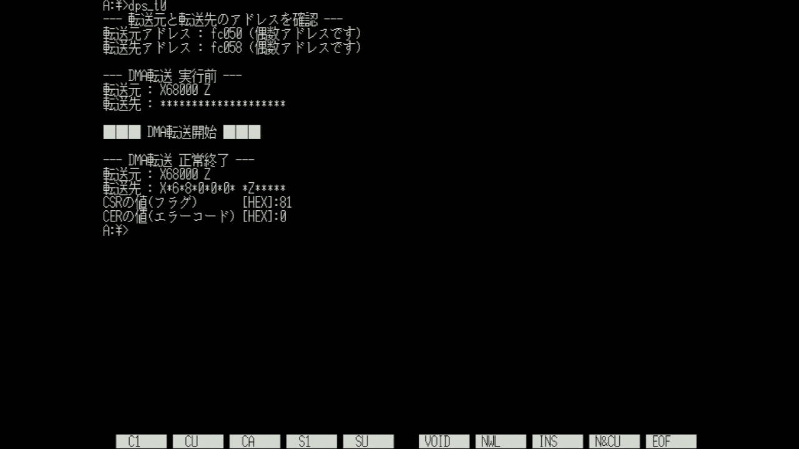
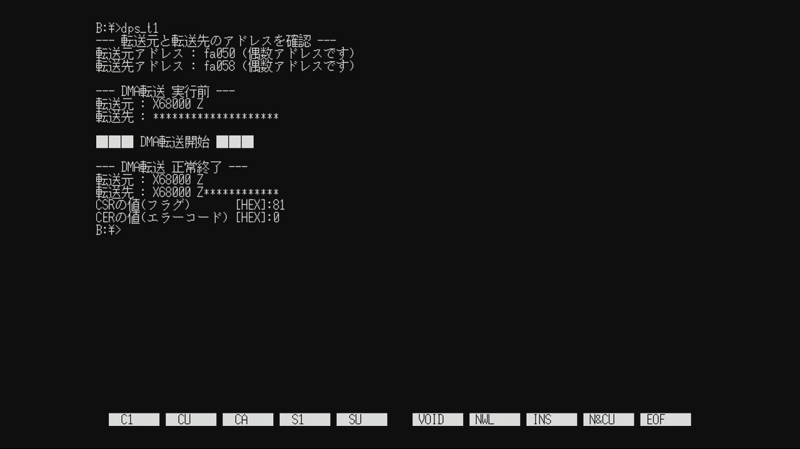
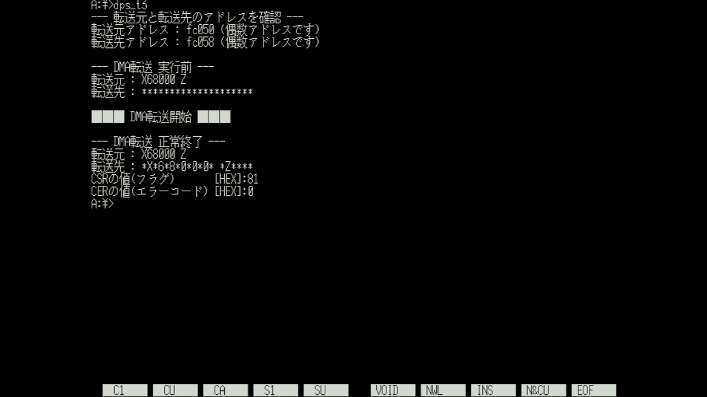
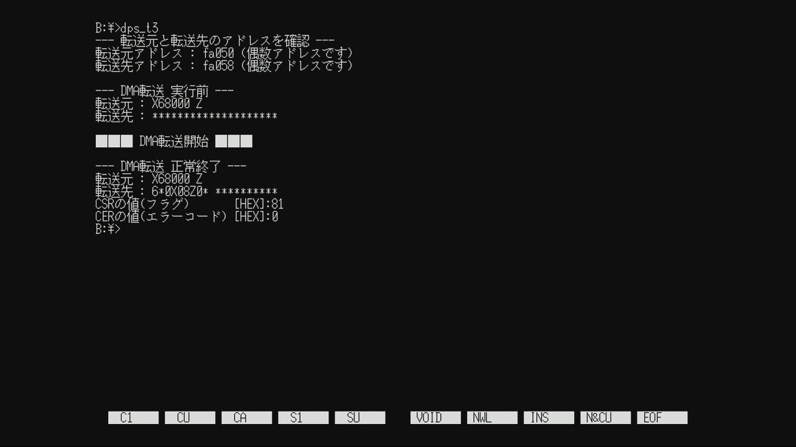
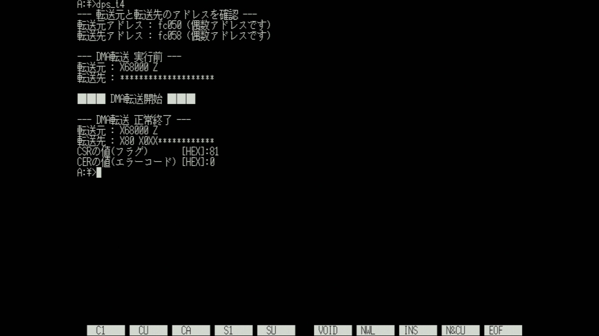
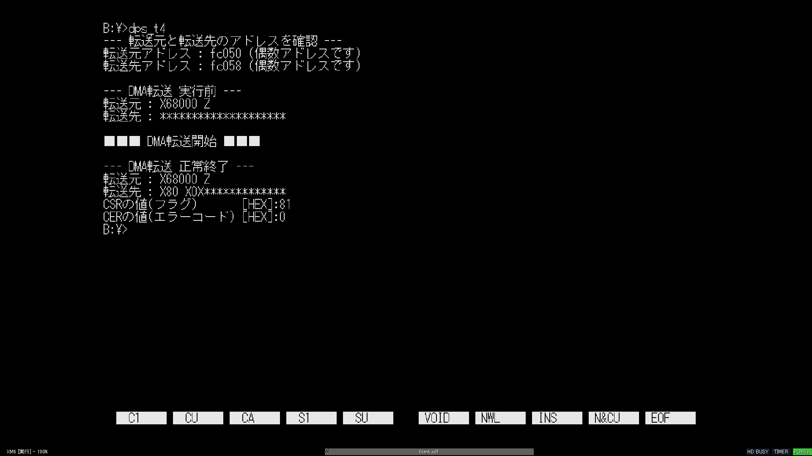

X68000 ZのDMAはDPS8ビット設定時の動作が実機と異なる

2024-04-13 投稿：
Inside X68000を参考に、DMAに関する学習をしていた際に本現象に遭遇しました。
DMA周りの再現度を向上できれば、これまで動作しなかったソフトが動くようになるかも知れませんね。
個人的に、実害の有無に関わらず実機動作をより忠実に再現するアップデートを望んでいます。
他のエミュレータの再現度に負けて欲しくないです。
確認用コード(GCC2 + LIBC 1.1.32A) dps_t0.cc
#include <stdio.h>
#include <iocslib.h>
// 型定義 : 符号(S:あり/U:なし) バイト数(サイズ)
typedef signed char S1;
typedef signed short S2;
typedef signed long S4;
typedef unsigned char U1;
typedef unsigned short U2;
typedef unsigned long U4;
// DMACレジスタ(チャンネル#2)アドレス定義 : 外部非公開(モジュール内でのみ使用可)
#define DMAC2_CSR (*((U1*)0xE84080)) // チャンネルステータスレジスタ (R/W)
#define DMAC2_CER (*((U1*)0xE84081)) // チャンネルエラーレジスタ (R)
#define DMAC2_DCR (*((U1*)0xE84084)) // デバイスコントロールレジスタ (R/W)
#define DMAC2_OCR (*((U1*)0xE84085)) // オペレーションコントロールレジスタ (R/W)
#define DMAC2_SCR (*((U1*)0xE84086)) // シーケンスコントロールレジスタ (R/W)
#define DMAC2_CCR (*((U1*)0xE84087)) // チャンネルコントロールレジスタ (R/W)
#define DMAC2_MTC (*((U2*)0xE8408A)) // メモリトランスファ・カウンタ (R/W)
#define DMAC2_MAR (*((void**)0xE8408C)) // メモリアドレスレジスタ (R/W)
#define DMAC2_DAR (*((void**)0xE84094)) // デバイスアドレスレジスタ (R/W)
#define DMAC2_BTC (*((U2*)0xE8409A)) // ベーストランスファ・カウンタ (R/W)
#define DMAC2_BAR (*((void**)0xE8409C)) // ベースアドレスレジスタ (R/W)
#define DMAC2_NIV (*((U1*)0xE840A5)) // ノーマルインタラプトベクタ (R/W)
#define DMAC2_EIV (*((U1*)0xE840A7)) // エラーインタラプトベクタ (R/W)
#define DMAC2_MFC (*((U1*)0xE840A9)) // メモリファンクションコード (R/W)
#define DMAC2_CPR (*((U1*)0xE840AD)) // チャンネルプライオリティレジスタ (R/W)
#define DMAC2_DFC (*((U1*)0xE840B1)) // デバイスファンクションコード (R/W)
#define DMAC2_BFC (*((U1*)0xE840B9)) // ベースファンクションコード (R/W)
#define DMAC3_GCR (*((U1*)0xE840FF)) // ジェネラルコントロールレジスタ (R/W)
// DMAパラメータ定義 : 外部公開(モジュール外で使用可)
#define DMA_DSP8 0x00 // 8ビットポート
#define DMA_DSP16 0x08 // 16ビットポート(標準設定)
#define DMA_SIZE1 0x01 // 転送サイズ1バイト(MAR→DAR,オートリクエスト最大速度で固定)
#define DMA_SIZE2 0x11 // 転送サイズ2バイト(MAR→DAR,オートリクエスト最大速度で固定)
#define DMA_SIZE4 0x21 // 転送サイズ4バイト(MAR→DAR,オートリクエスト最大速度で固定)
#define DMA_ADDR_FIX 0x00 // 転送毎アドレスは固定
#define DMA_ADDR_INC 0x01 // 転送毎アドレスが増加
#define DMA_ADDR_DEC 0x02 // 転送毎アドレスが減少
#define TES_BUFSIZ_SRC 8
#define TES_BUFSIZ_DST 20
// グローバル変数(メモリ)
U1 u1_g_Src[TES_BUFSIZ_SRC] = { 'X','6', '8', '0', '0', '0', ' ', 'Z' }; // 転送元
U1 u1_g_Dst[TES_BUFSIZ_DST] = { '*', '*', '*', '*', '*', // 転送先
'*', '*', '*', '*', '*',
'*', '*', '*', '*', '*',
'*', '*', '*', '*', '*' };
// DMA初期化 [DMAC使用手順の①と②]
void vd_g_BSP_DmaInit(void* vdpt_src, // 転送元のアドレス
void* vdpt_dst, // 転送先のアドレス
U1 u1_mac, // 転送毎のアドレス増減設定(転送元)
U1 u1_dac, // 転送毎のアドレス増減設定(転送先)
U1 u1_dsp, // デバイスポートサイズ
U1 u1_size, // 転送サイズ
U2 u2_cnt) // 転送回数
{
// 引数で受け取ったアドレス増減設定をSCRレジスタのビット位置に合わせる
U1 u1_scr = (u1_mac << 2) | u1_dac;
// DMAC使用前に必ずフラグをクリア [DMAC使用手順の①]
DMAC2_CSR = 0xFF;
// 第3話で決めた設定値を各レジスタに書き込む [DMAC使用手順の②]
DMAC2_DCR = u1_dsp; // メモリ転送は通常16ビットポート設定だが、引数により8ビットポートに設定可能
DMAC2_OCR = u1_size; // MAR→DAR転送, オートリクエスト最大速度 / 引数により可変：転送サイズ
DMAC2_SCR = u1_scr; // MARとDARに設定したアドレスを転送度に増減させるかの設定
DMAC2_CCR = 0x00; // 転送開始ビットのクリア、及び未使用の機能を停止させる
DMAC2_MTC = u2_cnt; // 転送回数
DMAC2_MAR = vdpt_src; // 転送元アドレス
DMAC2_DAR = vdpt_dst; // 転送先アドレス
DMAC2_MFC = 0x05; // MARはスーパーバイザでアクセスで固定
DMAC2_CPR = 0x03; // 優先度最低で固定
DMAC2_DFC = 0x05; // DARはスーパーバイザでアクセスで固定
}
// DMA転送開始 [DMAC使用手順の③]
void vd_g_BSP_DmaStart()
{
DMAC2_CCR |= 0x80;
}
// DMA転送完了待ち (戻値: 0:エラー発生 / 1:転送完了) [DMAC使用手順の④]
U1 u1_g_BSP_DmaWaitCmp()
{
while(!(DMAC2_CSR & 0x90));
return !(DMAC2_CSR & 0x10);
}
// DMAフラグクリア [DMAC使用手順の⑤]
void vd_g_BSP_DmaClearFlag()
{
DMAC2_CSR = 0xFF;
}
// DMAフラグを返す
U1 u1_g_BSP_DmaGetFlag()
{
return (U1)DMAC2_CSR;
}
// DMAエラーコードを返す
U1 u1_g_BSP_DmaGetErrCode()
{
return (U1)DMAC2_CER;
}
// エントリポイント：メイン処理
void main(void)
{
S4 i; // ループカウンタ
S4 s4_ssp = B_SUPER(0); // 保護機能：解除
// DMA初期化 [DMAC使用手順の①と②]
vd_g_BSP_DmaInit(u1_g_Src, // 転送元アドレス
u1_g_Dst, // 転送先アドレス
DMA_ADDR_INC, // 転送毎のアドレス増減設定(転送元)
DMA_ADDR_INC, // 転送毎のアドレス増減設定(転送先)
DMA_DSP8, // デバイスポートサイズ
DMA_SIZE1, // 転送サイズ
8); // 転送回数
printf("--- 転送元と転送先のアドレスを確認 ---\n");
printf("転送元アドレス : %x (%s数アドレスです)\n" , u1_g_Src, (((U4)u1_g_Src) % 2 == 0) ? "偶" : "奇");
printf("転送先アドレス : %x (%s数アドレスです)\n\n", u1_g_Dst, (((U4)u1_g_Dst) % 2 == 0) ? "偶" : "奇");
printf("--- DMA転送 実行前 ---\n");
printf("転送元 : "); for(i= 0; i < TES_BUFSIZ_SRC; i++){ putchar(u1_g_Src[i]);} printf("\n");
printf("転送先 : "); for(i= 0; i < TES_BUFSIZ_DST; i++){ putchar(u1_g_Dst[i]);} printf("\n");
printf("\n■■■ DMA転送開始 ■■■\n\n");
// DMA転送開始 [DMAC使用手順の③]
vd_g_BSP_DmaStart();
// DMA転送完了待ち [DMAC使用手順の④]
if(u1_g_BSP_DmaWaitCmp()) {
printf("--- DMA転送 正常終了 ---\n"); // 正常終了であることを表示
} else {
printf("--- DMA転送 エラー終了 ---\n"); // エラー終了であることを表示
}
printf("転送元 : "); for(i= 0; i < TES_BUFSIZ_SRC; i++){ putchar(u1_g_Src[i]);} printf("\n");
printf("転送先 : "); for(i= 0; i < TES_BUFSIZ_DST; i++){ putchar(u1_g_Dst[i]);} printf("\n");
printf("CSRの値(フラグ) [HEX]:%x\n", u1_g_BSP_DmaGetFlag()); // フラグ表示
printf("CERの値(エラーコード) [HEX]:%x\n", u1_g_BSP_DmaGetErrCode()); // エラーコードを表示
// DMAフラグクリア [DMAC使用手順の⑤]
vd_g_BSP_DmaClearFlag();
B_SUPER(s4_ssp); // 保護機能：有効
}
確認番号0 (dps_t0.cc)
・dps_t0.ccからのコード変更箇所
なし
・DMAC 設定内容
オートリクエスト(最大速度)
MAR(偶数アドレス)→DAR(偶数アドレス)でメモリ→メモリ転送
転送元、転送先共に転送毎にアドレスをインクリメント
デバイスポートサイズ 8ビットポート
1バイトを8回転送(1ブロック)
・CompactXVI
転送結果：X*6*8*0*0*0* *Z*****
CSR の値：0x81 (転送エラーなし)
CER の値：0x00 (転送エラーなし)
・XM6TypeG ver.3.36
転送結果：X*6*8*0*0*0* *Z*****
CSR の値：0x81 (転送エラーなし)
CER の値：0x00 (転送エラーなし)
・X68000 Z EAK/PE ver.1.6.2
転送結果：X68000 Z************
CSR の値：0x81 (転送エラーなし)
CER の値：0x00 (転送エラーなし)
※ Z の転送結果は、同じコードで16ビットポートに設定変更した場合と同じ。
確認番号1 (dps_t1.cc)
・dps_t0.ccからのコード変更箇所
main()内でコールするvd_g_BSP_DmaInit()の引数を変更
→ 第6引数(転送サイズ)を DMA_SIZE1 から DMA_SIZE4 に変更
→ 第7引数(転送回数)を 8 から 2 に変更
・DMAC 設定内容
4バイトを2回転送(1ブロック)
その他は確認番号0と同じ
・CompactXVI
転送結果：X*6*8*0*0*0* *Z*****
CSR の値：0x81 (転送エラーなし)
CER の値：0x00 (転送エラーなし)
・XM6TypeG ver.3.36
転送結果：X*6*8*0*0*0* *Z*****
CSR の値：0x81 (転送エラーなし)
CER の値：0x00 (転送エラーなし)
・X68000 Z EAK/PE ver.1.6.2
転送結果：X68000 Z************
CSR の値：0x81 (転送エラーなし)
CER の値：0x00 (転送エラーなし)
※ Z の転送結果は、同じコードで16ビットポートに設定変更した場合と同じ。
確認番号2 (dps_t2.cc)
・dps_t0.ccからのコード変更箇所
main()内でコールするvd_g_BSP_DmaInit()の引数を変更
→ 第2引数(転送先アドレス)を u1_g_Dst から u1_g_Dst + 1 に変更
・DMAC 設定内容
MAR(偶数アドレス)→DAR(奇数アドレス)でメモリ→メモリ転送
その他は確認番号0と同じ
・CompactXVI
転送結果：*X*6*8*0*0*0* *Z****
CSR の値：0x81 (転送エラーなし)
CER の値：0x00 (転送エラーなし)
・XM6TypeG ver.3.36
転送結果：*X*6*8*0*0*0* *Z****
CSR の値：0x81 (転送エラーなし)
CER の値：0x00 (転送エラーなし)
・X68000 Z EAK/PE ver.1.6.2
転送結果：*X68000 Z***********
CSR の値：0x81 (転送エラーなし)
CER の値：0x00 (転送エラーなし)
※ Z の転送結果は、同じコードで16ビットポートに設定変更した場合と同じ。
※ 確認結果スクショにて、転送先のアドレスが偶数と表示されています。
これは、用意したメモリ領域の先頭アドレスを表示してしまっているためです(単にミスです)。
実際は vd_g_BSP_DmaInit() に与える引数で+1しているので、転送先は奇数アドレスとなります。
確認結果に影響はありません。
確認番号3 (dps_t3.cc)
・dps_t0.ccからのコード変更箇所
main()内でコールするvd_g_BSP_DmaInit()の引数を変更
→ 第2引数(転送先アドレス)を u1_g_Dst から u1_g_Dst + 1 に変更
→ 第6引数(転送サイズ)を DMA_SIZE1 から DMA_SIZE4 に変更
→ 第7引数(転送回数)を 8 から 2 に変更
・DMAC 設定内容
MAR(偶数アドレス)→DAR(奇数アドレス)でメモリ→メモリ転送
4バイトを2回転送(1ブロック)
その他は確認番号0と同じ
・CompactXVI
転送結果：*X*6*8*0*0*0* *Z****
CSR の値：0x81 (転送エラーなし)
CER の値：0x00 (転送エラーなし)
・XM6TypeG ver.3.36
転送結果：*X*6*8*0*0*0* *Z****
CSR の値：0x81 (転送エラーなし)
CER の値：0x00 (転送エラーなし)
・X68000 Z EAK/PE ver.1.6.2
転送結果：6*0X08Z0* **********
CSR の値：0x81 (転送エラーなし)
CER の値：0x00 (転送エラーなし)
※ Z の転送結果は、同じコードで16ビットポートに設定変更した場合と同じ。
※ 確認結果スクショにて、転送先のアドレスが偶数と表示されています。
これは、用意したメモリ領域の先頭アドレスを表示してしまっているためです(単にミスです)。
実際は vd_g_BSP_DmaInit() に与える引数で+1しているので、転送先は奇数アドレスとなります。
確認結果に影響はありません。
確認番号4 (dps_t4.cc)
・dps_t0.ccからのコード変更箇所
マクロ(DMAパラメータ定義)の値を変更
→ #define DMA_SIZE1の値を 0x01 から 0x81 に変更
→ #define DMA_SIZE2の値を 0x11 から 0x91 に変更
→ #define DMA_SIZE4の値を 0x21 から 0xA1 に変更
vd_g_BSP_DmaInit()内のレジスタ設定を変更
→ DMAC2_MAR = vdpt_src; を DMAC2_DAR = vdpt_src; に変更
→ DMAC2_DAR = vdpt_dst; を DMAC2_MAR = vdpt_dst; に変更
・DMAC 設定内容
DAR(偶数アドレス)→MAR(偶数アドレス)でメモリ→メモリ転送
その他は確認番号0と同じ
・CompactXVI
転送結果：X80 X0XX************
CSR の値：0x81 (転送エラーなし)
CER の値：0x00 (転送エラーなし)
・XM6TypeG ver.3.36
転送結果：X80 X0X*************
CSR の値：0x81 (転送エラーなし)
CER の値：0x00 (転送エラーなし)
・X68000 Z EAK/PE ver.1.6.2
転送結果：X68000 Z************
CSR の値：0x81 (転送エラーなし)
CER の値：0x00 (転送エラーなし)
※ Z の転送結果は、同じコードで16ビットポートに設定変更した場合と同じ。
確認結果スクショ
確認番号0 (CompactXVI)

確認番号0 (XM6TypeG ver.3.36)

確認番号0 (X68000 Z EAK/PE ver.1.6.2)
確認番号1 (CompactXVI)

確認番号1 (XM6TypeG ver.3.36)
確認番号1 (X68000 Z EAK/PE ver.1.6.2)

確認番号2 (CompactXVI)
確認番号2 (XM6TypeG ver.3.36)
確認番号2 (X68000 Z EAK/PE ver.1.6.2)

確認番号3 (CompactXVI)

確認番号3 (XM6TypeG ver.3.36)
確認番号3 (X68000 Z EAK/PE ver.1.6.2)

確認番号4 (CompactXVI)

確認番号4 (XM6TypeG ver.3.36)

確認番号4 (X68000 Z EAK/PE ver.1.6.2)
関連記事：
X68000 Z(FW.ver.1.6.2)はDMA転送エラー時の挙動が実機と異なる
Archive Note
こちらは X68000 Z コミュニティサイト(Z-CLUB) 過去投稿を修正加筆したものです。
基本的に当時の状況に基づいた内容になっています。
元投稿：https://dev.zuiki.com/project-z/community/post/detail/1013
[EOF]